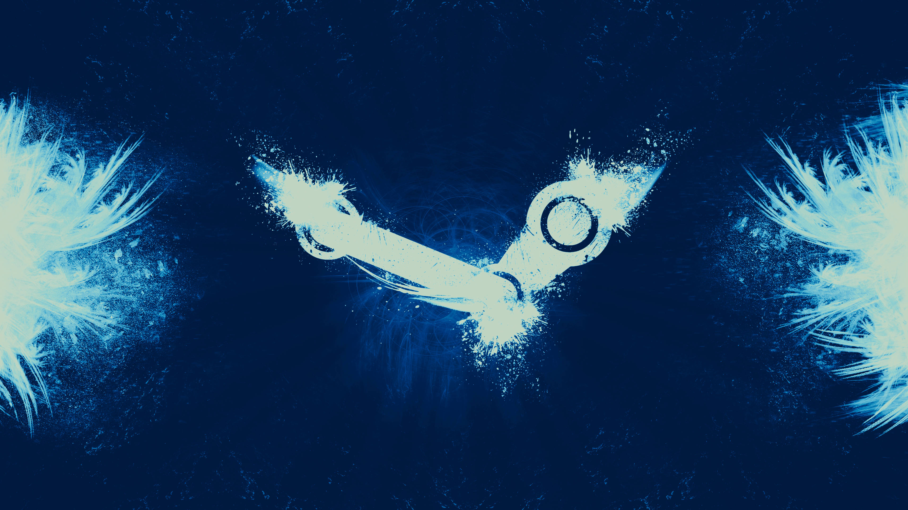

Steam
Steam ([stiːm], с англ. — «пар») — онлайн-сервис цифрового распространения компьютерных игр и программ, разработанный и поддерживаемый компанией Valve. Steam выполняет роль средства технической защиты авторских прав, платформы для многопользовательских игр и потокового вещания, а также социальной сети для игроков. Программный клиент Steam также обеспечивает установку и регулярное обновление игр, облачные сохранения игр, текстовую и голосовую связь между игроками. На начало 2021 года через Steam предлагалось к продаже свыше 50 тысяч игр, и это количество увеличивалось ежегодно на 8—10 тысяч игр[3]. В 2020 году число активных пользователей сервиса, использовавших его хотя бы один раз в месяц, превышало 120,4 миллиона[4]. C 2016 года была утверждена премия в области компьютерных игр Steam Awards, в рамках которой отбираются лауреаты посредством голосования среди пользователей службы цифровой дистрибуции.